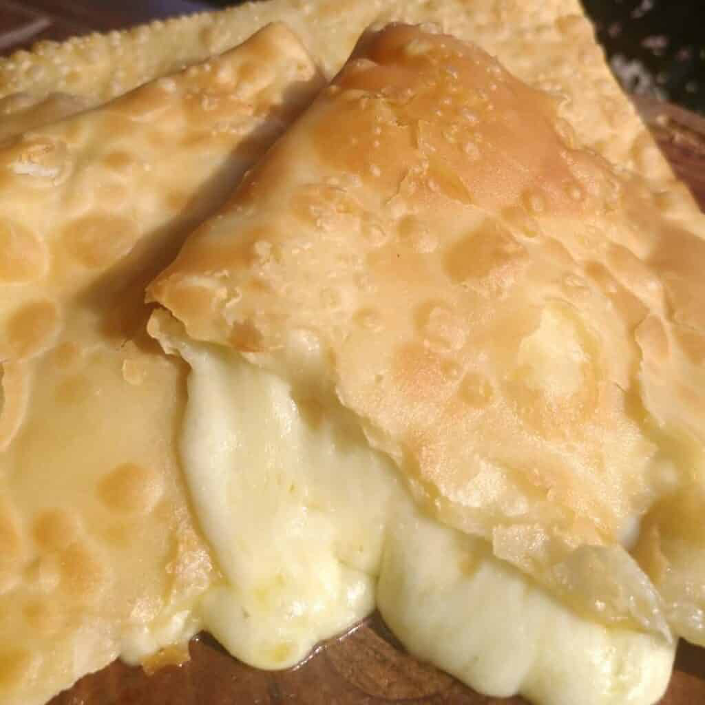

Pastel de queijo
Ingredientes para 20 Porções
- 3 xícaras (chá) de farinha de trigo
- 1 colher (chá) de manteiga
- 1/2 colher (chá) de sal
- 1/2 xícara (chá) de leite morno
- queijo prato cortado em cubos
- óleo para fritar
Modo de Preparo
- Coloque a farinha numa tigela e faça um buraco no centro.
- Junte a manteiga e o sal.
- Mexa, despejando aos poucos o leite.
- Amasse até que a massa se solte das mãos.
- Cubra com um guardanapo e deixe descansar por cerca de 2 horas.
- Abra a massa com o rolo e corte em quadrados de 6 cm de lado.
- Coloque no meio de cada quadrado alguns cubos de queijo.
- Dobre a massa para fechar o pastel e apare as bordas com o cortador próprio.
- Aqueça o óleo, frite e escorra.
- Por fim, delicie-se.
